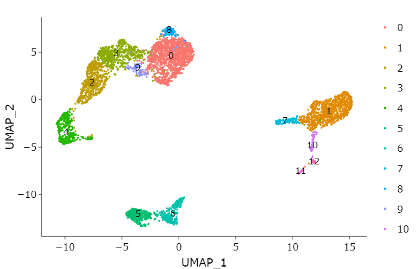
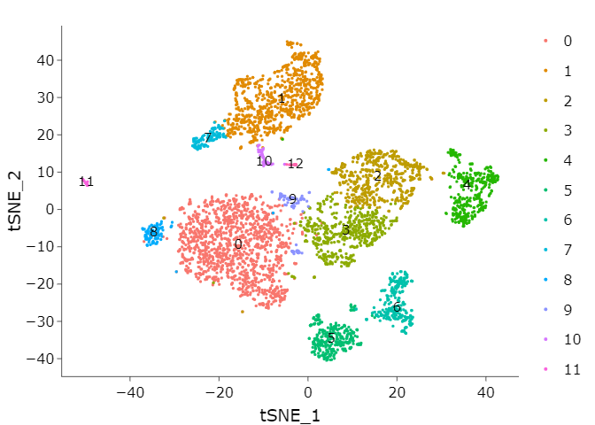
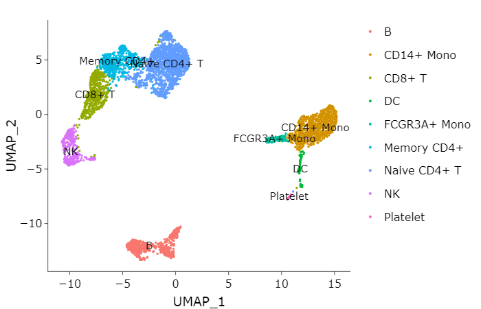

Single-Cell RNA Sequencing Analysis
Contents
Single-Cell RNA Sequencing Analysis#
1. Introduction#
This tutorial provides an approach to basic analysis for single-cell RNA sequencing data:
Data pre-processing
QC and selecting cells
Normalizing the data
Identifying high variable genes(feature selection)
Scaling the data
Linear dimensional reduction
PCA
Determine dimensionality of PCs
Cluster the cells
Visualization
Differentially expressed genes
Identify the cell types
Enrichment analysis
Gene Ontology
Pathway Enrichment
This tutorial refers to Seurat, a software(package) for analyzing single-cell RNA seq data in R.
Feel free to contact me if you have any questions. Email: feng_huijian@gibh.ac.cn Wechat: rick__sanchez__
2. Preparation#
2.1 Software#
All the anaylsis below relies on the R environment. Please download R and related software before the coures.
We select the tsinghua mirror to download R
Download and install R
Windows user: Please click
Download R for Windows, and then clickinstall R for the first time.Mac user: Please click
Download R for (Mac) OS X, and then clickR-3.6.1.pkg.
Download and install Rstudio, and then select
RStudio Desktop Open Source License FREEto download Windows VersionRStudio 1.3.1056 - Windows 7+ (64-bit)or Mac VersionRStudio 1.3.1056 - macOS 10.13+ (64-bit)Install the R packages for the following analysis.
We also use the tsinghua mirror to download R packages for saving times and avoiding the unnecessary Error. Open the areadly installed Rstudio. Paste and execute the code elow in the Console panel:
# rcran
options("repos" = c(CRAN="https://mirrors.tuna.tsinghua.edu.cn/CRAN/"))
# install bioconductor library.
options("repos" = c(CRAN="https://mirrors.tuna.tsinghua.edu.cn/CRAN/"))
if (!requireNamespace("BiocManager"))
install.packages("BiocManager")
# bioconductor
options(useHTTPS=FALSE, BioC_mirror="http://mirrors.tuna.tsinghua.edu.cn/bioconductor/")
# A function: intalling the packages to R ->IPR
IPR <- function(packages,
sources = c("RCran", "Bioconductor", "Github")){
installedpackages <- installed.packages()[ ,"Package"]
existpackages <- intersect(packages, installedpackages)
if(length(existpackages) != 0){
print(paste0("Packages ", existpackages, " have been installed"))
}
newpackages <- setdiff(packages, installedpackages)
if(length(newpackages) != 0){
if(sources == "RCran"){
install.packages(newpackages)
}
if(sources == "Bioconductor"){
BiocManager::install(newpackages)
}
if(sources == "Github"){
devtools::install_github(newpackages)
}
}
}
# R CRAN packages
# rpkg <- c("dplyr","ggplot2","matrixStats","pheatmap","DT","data.table", "Seurat")
# IPR(packages = rpkg, sources = "RCran")
# Bioconductor packages
# biopkg <- c("clusterProfiler", "org.Mm.eg.db", "org.Hs.eg.db", "genefilter", "ReactomePA")
# IPR(packages = biopkg, sources = "Bioconductor")
2.2 Data#
In this tutorial, we provide a dataset Peripheral Blood Mononuclear Cells(PBMC) freely available from 10X Genomics. There are ~5k single cells that were sequencing on the Illumina NextSeq500. You can download the data from the 10X Genomics.
Open 10X official website for downloading data.
Select section
DATASETSandclick View all.When you enter this page, you should fill in the relevant information:
Name,Your Email,Institution,Country. Click no for “receive update” and agree the “Privacy Policy”.Select 5k Peripheral blood mononuclear cells (PBMCs) from a healthy donor (v3 chemistry). And then select
Feature / cell matrix (filtered). Warning: This Object size is 41.21 MB.
And then you should extract the compressed file into a directory, such as D:/Tutorial/scRNA_seq_tutorial/counts/filtered_feature_bc_matrix(this directory need to be created).
Then, we can check how the 10X single-cell RNA seq data is stored. we open the directoryD:/Tutorial/scRNA_seq_tutorial/counts/filtered_feature_bc_matrix, and we will find that three compressed files store their respective files:
barcodes.tsv.gz is used to store the information of each cell barcode. In general, it store the name of each single-cell.
features.tsv.gz is used to store the genetic information obtained by sequencing.
matrix.mtx.gz is used to store the data of single-cell expressed genes, and it is a storage format for sparse matrices using the Coordinate Format(COO If you are interested in this format, click it.)
3. Start#
3.1 Load Packages#
We load the packages by calling library() at firt.
library(Seurat)
library(dplyr)
library(ggplot2)
library(RColorBrewer)
library(cowplot)
library(clusterProfiler)
library(genefilter)
library(ReactomePA)
library(DT)
library(plotly)
Error in library(clusterProfiler): there is no package called ‘clusterProfiler’
Traceback:
1. library(clusterProfiler)
3.2 Setup the Seurat Object#
At first, We have to set a correct working directory.
Then we can load the data by calling Read10X(). This function can read the three files(barcodes.tsv.gz, features.tsv.gz, matrix.mtx.gz) in the directory at once.
Then we can setup the seurat object by calling CreateSeuratObject().
We highly encourage querying the detail of a function by calling help(function_name) or?function_name, such as help(CreateSeuratObject).
## Example for set working directory
## setwd("D:/singlecell_pratice")
## loading the data
adata <- Read10X("./counts/filtered_feature_bc_matrix")
## create the seurat object
adata <- CreateSeuratObject(counts = adata,
project = "sc_tutorial",
min.cells = 3,
min.features = 200)
# parameter counts : input the "raws gene expression marix"
# parameter project : input the "name of our project"
# parameter min.cells : exclude some "genes" which are expressed in less than 3 cells
# parameter min.features : exclude some "cells" which are expressing less then 200 genes
## view the data
adata
## An object of class Seurat
## 19037 features across 5100 samples within 1 assay
## Active assay: RNA (19037 features)
4. Data pre-processing#
These workflow represent the selection and filtration of cells based on QC metrics, data normalization and data scaling, and the detection of highly variable genes.
4.1 QC and selecting cells#
Seurat provides simple QC metrics and allow you to filter cells based on user-defined criterion. A few QC metrics include commonly:
The number of unique genes detected in each cell(each droplet):
Low-quality cells or empty droplets will often have very few gene
Cell doublets or multiplets may have an aberrantly high gene count
The above assumptions also apply to the total number of molecules in each cell(each droplet).
The percentage of reads that map to the mitochondrial genome
Low-quality or dying cells often exhibit extensive mitochondrial contamination
we call PercentageFeatureSet to caculate the percentage of mitochondrial genes. Mitochondrial genes are a set genes which can be captured by matching the prefix MT-.
## caculate the percentage of mitochondrial genes
adata[["percent.mt"]] <- PercentageFeatureSet(adata,
pattern = "^MT-")
# The [[ operator can add columns to object metadata. You can use "adata[[]]" to check object metadata.
# parameter pattern : match regular expression. "^MT-" means that the gene with prefix "MT-"
## function head() allow us to check the first 6 rows of data frame
head(adata[[]])
## orig.ident nCount_RNA nFeature_RNA percent.mt
## AAACCCAAGACAGCTG sc_tutorial 8384 2550 9.148378
## AAACCCAAGTTAACGA sc_tutorial 11768 3017 6.296737
## AAACCCACAGTCGCAC sc_tutorial 6947 2033 5.570750
## AAACCCAGTAGCTTGT sc_tutorial 9354 2193 7.750695
## AAACCCATCTGCCCTA sc_tutorial 8970 2630 7.781494
## AAACGAAAGCAATTAG sc_tutorial 9291 2286 11.634916
In this data, we visualize the QC metric and use these filter cells.
nCount_RNA means that the total number of reads per cells map to the genome.
nFeature_RNA means that the total number of genes expressed per cell.
percent.mt means that the percentage of mitochondrial genes per cell.
we filter cells that have nFeature_RNA over 5000
we filter cells that have nFeature_RNA less than 200
we filter cells that have percent.mt over 20%
## Check the distribution of the three QC metric
VlnPlot(adata,
features = c("nFeature_RNA", "nCount_RNA", "percent.mt"),
ncol = 3)
## parameter
nfeature_min = 200
nfeature_max = 5000
percent_mt = 20
## Check the distribution of the three QC metric
plot1 <- FeatureScatter(adata, feature1 = "nCount_RNA", feature2 = "percent.mt") +
geom_hline(yintercept = percent_mt, linetype="dotted", size = 1, colour = "#ae0404")
plot2 <- FeatureScatter(adata, feature1 = "nCount_RNA", feature2 = "nFeature_RNA") +
geom_hline(yintercept = nfeature_min, linetype="dotted", size = 1, colour = "#04ae59")+
geom_hline(yintercept = nfeature_max, linetype="dotted", size = 1, colour = "#04ae59")
## plot
plot_grid(plot1, plot2, nrow = 2)
## QC
# 200< nFeature_RNA < 5000 & percent.mt < 20%
adata <- subset(adata,
subset = nFeature_RNA < nfeature_max & nFeature_RNA > nfeature_min & percent.mt < percent_mt)
## check data
adata
## An object of class Seurat
## 19037 features across 4591 samples within 1 assay
## Active assay: RNA (19037 features)
4.2 Normalizing the data#
After moving unwanted cells, the next step is to normalize the data. We employ a global-scaling normalizaiton method LogNormalize that normalizes the feature expression measurements for each cell by the total expression, multiplies this by a size factor(10,000 by default), and log-transforms the result. Normalized values are stored in the adata[["RNA"]]@data which is another sparse matrix.
# normalizing data
adata <- NormalizeData(adata,
normalization.method = "LogNormalize",
scale.factor = 10000)
4.3 Identifying high variable genes#
We next caculate a subset of geens that exhibit high cell-to-cell variation in the data(they are highly expressed in some cells,and lowly expressed in others). The high varialble genes can highlight biological signal in single-cell data. we can find high variable genes(HVGs) by calling FindVariableFeature() function. By default, we return top 3000 HVGs in single-cell data. These genes will be used in downstream analysis, like PCA. The resluts are stored in adata[["RNA"]]@var.features.
## caculates hvgs in single-cell data
hvgs = 3000
adata <- FindVariableFeatures(adata,
selection.method = "vst",
nfeatures = hvgs)
# "vst" is a method that model the mean-variance relationship in single-cell data.
# parameter nfeatures is to select top genes
## plot top 3000 HVGs
plot1 <- VariableFeaturePlot(adata)
plot1
4.4 Scaling the data#
Next, we apply a linear transformation(“scaling”) that is a standard pre-processing step prior to dimensional reduction techniques like PCA. The scaleData function:
Shift the expression of each gene, so that the mean expressiong across cells is 0
Scales the expression of each gene, so that the variance across cells is 1 The results are stored in the
adata[["RNA"]]@scale.datawhy? This step is to prevent some values that are too large to capture biological information stably. But there are also agruments that is better reuslt without scale.
# select top 3000 HVGs and perform the scale function
tgenes <- adata[["RNA"]]@var.features
# tgenes <- rownames(adata[["RNA"]])
adata <- ScaleData(adata,
features = tgenes)
Brief summary
In the data pre-processing workflow, we do
QC and selecting cells This step is to remove th low-quality or outlier cells.
Normalizing the data This step is to smooth gene expression, so that the highly-expressed genes are not “so high”
Identifying high variable genes(feature selection) This step is to highlight biological signal in single-cell data
Scaling the data This step gives equal weight in downstream analyses, so that highly-expressed genes do not dominate
5. Linear dimensional reduction#
5.1 PCA#
Next, we perform PCA on the scale.data. By default, only the previously detemined variable features are used as input. we select the top 3000 HVGs as input.
## perform the PCA by input top 3000 HVGs
# tgenes <- adata[["RNA"]]@var.features
npcs = 50
adata <- RunPCA(adata,
features = tgenes,
npcs = npcs,
verbose = FALSE)
# parameter features to input user-defined genes
# parameter npcs, the number of PCA
5.2 Determine dimensionality of PCs#
PCA is feature selection techniques whose purpose is to reduce noise, extract features, data compression, increase computing speed and so on. Each PC is linear combination that combines information across a correlated gene set. The top PCs therefore represent a robust comprassion of the dataset. How many components should we choose to include? 10? 20? 100? We can call function ElblowPlot to generates a elbow plot: a ranking of the PCs based on the percentages of variance. In this dataset, we can observe an “elbow” around PC20, suggesting that the majority features are captured in the first 20 PCs.
# adata <- JackStraw(adata, num.replicate = 100, dims = 30)
ElbowPlot(adata,
ndims = npcs)
6. Clustering#
Seurat applies a graph-based clustering approach. 1. They first construct a NN graph based on the Euclidean distance in PCA space, and refine the edge weights between any two cells based on the shared overlap in their local neighborhoods. Call FindNeighbors() to construct a NN graph. 2. To cluster the cells, they apply the modularity optimization algorithm ( Louvain algorithm, default) to cluster the cells. We can call FindClusters() to do this step. And a parameter resolution is set in the FindClusters(), with increased values leading to a greater number of clusters.
# selcet the first 10 PCs
pcs = 20
# create nn graph
adata <- FindNeighbors(adata,
dims = 1:pcs,
k.param = 20)
# louvain cluster
adata <- FindClusters(adata,
resolution = 0.4)
## Modularity Optimizer version 1.3.0 by Ludo Waltman and Nees Jan van Eck
##
## Number of nodes: 4591
## Number of edges: 162469
##
## Running Louvain algorithm...
## Maximum modularity in 10 random starts: 0.9151
## Number of communities: 13
## Elapsed time: 0 seconds
# check the metadata
head(adata[[]])
## orig.ident nCount_RNA nFeature_RNA percent.mt
## AAACCCAAGACAGCTG sc_tutorial 8384 2550 9.148378
## AAACCCAAGTTAACGA sc_tutorial 11768 3017 6.296737
## AAACCCACAGTCGCAC sc_tutorial 6947 2033 5.570750
## AAACCCAGTAGCTTGT sc_tutorial 9354 2193 7.750695
## AAACCCATCTGCCCTA sc_tutorial 8970 2630 7.781494
## AAACGAAAGCAATTAG sc_tutorial 9291 2286 11.634916
## RNA_snn_res.0.4 seurat_clusters
## AAACCCAAGACAGCTG 2 2
## AAACCCAAGTTAACGA 1 1
## AAACCCACAGTCGCAC 0 0
## AAACCCAGTAGCTTGT 8 8
## AAACCCATCTGCCCTA 6 6
## AAACGAAAGCAATTAG 6 6
7. Visualization {.tabset .tabset-fade .tabset-pills}#
Seurat offers several non-linear dimensional reduction techniques, such as tSNE and UMAP, to visualize and explore these datasets. The goal of these algorithms is to learn the underlying manifold of the data in order to place similar cells together in low-dimensional space.
call function RunUMAP#
If you haven’t installed UMAP, you can do so via reticulate::py_install(packages = 'umap-learn')
# UMAP
adata <- RunUMAP(adata,
dims = 1:pcs)
# individual clusters
p1 <- DimPlot(adata,
reduction = "umap",
label = TRUE)
ggplotly(p1)

call function RunTSNE#
# TSNE
adata <- RunTSNE(adata,
dims = 1:pcs)
# individual clusters
p1 <- DimPlot(adata,
reduction = "tsne",
label = TRUE)
ggplotly(p1)

8. Differentially expressed genes#
Seurat can help you find markers that define clusters via differential expression.
# find markers for every cluster compared to all remaining cells, report only the positive ones
adata_marker <- FindAllMarkers(adata,
only.pos = TRUE,
min.pct = 0.25,
logfc.threshold = 0.25)
DoHeatmap generates an expression heatmap for given cells and features. In this case, we are plotting the top 10 markers (or all markers if less than 10) for each cluster.
# select top 10 markers for each cluster.
top10 <- adata_marker %>% group_by(cluster) %>% top_n(n = 10, wt = avg_logFC)
# heatmap the top 10 markers for each cluster.
DoHeatmap(adata,
features = top10$gene,
raster = T,
label = F,
size = 2) +
theme(axis.text.y = element_blank())
9. Identify the cell types {.tabset .tabset-fade .tabset-pills}#
In this PBMC data, we can use the canonical markers to identify cell types and to mach the cell clusters.
Cell Clusters |
Gene Markers |
Cell Types |
|---|---|---|
5,6 |
MS4A1 |
B |
4 |
GNLY, NKG7 |
NK |
1 |
CD14, LYZ |
CD14+ Mono |
0,8,9 |
IL7R, CCR7 |
Naive CD4+T |
10,12 |
FCER1A, CST3 |
DC |
7 |
MS4A7, FCGR3A |
FCGR3A+ Mono |
3 |
IL7R, S100A4 |
Memory CD4+ |
2 |
CD8A |
CD8+ T |
11 |
PPBP |
Platelet |
B and NK#
# B, NK
FeaturePlot(adata,
features = c("MS4A1", # B
"GNLY", "NKG7"), # NK
cols = c("grey", "red", "red"),
ncol = 2)
CD14+Mono and Naive CD4+T#
# CD14+Mono, Naive CD4+T
FeaturePlot(adata,
features = c("CD14", "LYZ", # CD14+Mono
"IL7R", "CCR7"), # Naive CD4+T
cols = c("grey", "red", "red"),
ncol = 2)
DC and FCGR3A+ Mono#
# DC, FCGR3A+ Mono
FeaturePlot(adata,
features = c("FCER1A", "CST3", # DC
"MS4A7", "FCGR3A"), # FCGR3A+ Mono
cols = c("grey", "red", "red"),
ncol = 2)
Memory CD4+, CD8+ T and Platelet#
# Memory CD4+, CD8+ T, Platelet
FeaturePlot(adata,
features = c("IL7R", "S100A4", # Memory CD4+
"CD8A", # CD8+T
"PPBP"), # Platelet
cols = c("grey", "red", "red"),
ncol = 2)
10. plotting the cell types#
So we can plot the cell types labels on the each cluster
adata[["cell_types"]] <- "undetermined"
adata@meta.data$cell_labels <- as.character(adata@meta.data$seurat_clusters)
celltype_list = list("Naive CD4+ T"=c("0","8","9"),
"Memory CD4+"=c("3"),
"CD14+ Mono"=c("1"),
"B"=c("5","6"),
"CD8+ T"=c("2"),
"FCGR3A+ Mono"=c("7"),
"NK"=c("4"),
"DC"=c("10","12"),
"Platelet"=c("11"))
for(i in names(celltype_list)){
adata@meta.data$cell_types[adata@meta.data$cell_labels %in% celltype_list[[i]]] <- i
}
p1 <- DimPlot(adata,
reduction = "umap",
label = T,
group.by = "cell_types")
ggplotly(p1)

11. Enrichment Analysis {.tabset .tabset-fade .tabset-pills}#
We have to transform the gene SYMBOL to ENTREZID before enrichment
GO enrichment#
# At first, we select the some cluster to do GO analysis
# 11:Platelet, 2:CD8+ T
marker <- adata_marker[as.character(adata_marker$cluster) %in% c("2","11"), ]
marker$cluster <- as.character(marker$cluster)
marker <- split(marker$gene, marker$cluster)
# we can select the top 100 genes.
# t100 <- adata_marker %>% group_by(cluster) %>% top_n(n = 100, wt = avg_logFC)
# t100 <- split(top20$gene, top20$cluster)
entrezid <- lapply(marker, function(gr) as.numeric(bitr(gr, fromType = "SYMBOL", toType = "ENTREZID", OrgDb = "org.Hs.eg.db")$ENTREZID))
# PBMC GO
pvalueCutoff = 0.01
qvalueCutoff = 0.01
pbmc_go <- compareCluster(entrezid,
OrgDb='org.Hs.eg.db',
fun='enrichGO',
pvalueCutoff = pvalueCutoff,
qvalueCutoff = qvalueCutoff,
ont = "BP",
readable=T)
# plot the go
dotplot(pbmc_go,
title = paste0("PBMC Gene Ontology (qval < ", qvalueCutoff, ")"))
# view the go table data
go_table = pbmc_go@compareClusterResult
datatable(go_table, filter="top", options=list(pageLength = 10))
# we can save the GO table as the .html file
# datatable(go_table, filter="top", options=list(pageLength = 10)) %>% saveWidget("pbmc_go.html")
PA enrichment#
# And then we can do the pathway analysis
pbmc_pa<- compareCluster(entrezid,
organism = "human",
fun='enrichPathway',
pvalueCutoff = pvalueCutoff,
qvalueCutoff = qvalueCutoff,
readable=T)
# plot the PA
dotplot(pbmc_pa,
title = paste0("PBMC Pathway (qval < ", qvalueCutoff, ")"))
# pa_table = pbmc_pa@compareClusterResult